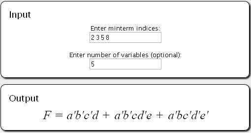

QMSolver is an implementation of the Quine-McCluskey algorithm written in JavaScript with an HTML/CSS frontend.
After giving your input, there is no more need to press Enter or to click a "Solve!" button. The resulting minimized function will be immediately displayed in the output area, and any changes with the input will trigger a recalculation.
The example below has inputs 2, 3, 5, and 8 for the minterm indices and 5 for the number of variables.
First off, QMSolver doesn't have any error handling for inputs. Sorry. We didn't feel the need to include it anymore after considering performance, stability, and security. QMSolver tries its best to read the numbers from your input though, so there's a good chance it will still work even with broken input. For best results, just follow the format!
My OS is [this], [that], etc. Is that supported?Most probably, yes. QMSolver is written in JavaScript and HTML/CSS. It should work with whatever operating system you are on, as long as you use a browser that supports JavaScript.
My browser is [this], [that], etc. Is that supported?Most probably, yes. QMSolver is guaranteed to work on any modern browser. We're not sure about IE6 and below, though. Heh.
My computer/browser freezes while using QMSolver! Why?You're also probably getting something along the lines of "error: non-responsive script". That just means that QMSolver is taking too long to process your input. This usually happens with minterms that need a lot of variables. It will still depend on your machine, though. On older machines, freezing has occured on as few as 5 variables. On newer machines, freezing usually starts at the 22-variable mark. As of this writing, there is no solution but to either wait for the QMSolver to finish processing, or to force-close your browser if it has become non-responsive for too long.
How did you incorporate syntax highlighting for the documentation page?We used this.
This is awesome! Can I copy / use this in my own projects?...probably, yeah. We still haven't decided upon a license to release QMSolver with, but we will probably be getting something non-restrictive; something that would allow redistribution and modification as long as credit is given where credit is due.
You guys are awesome! Will you have my babies?Right now we have no plans of fathering children, so no. But thanks! Here are our personal pages if you'd like to pay us a visit.